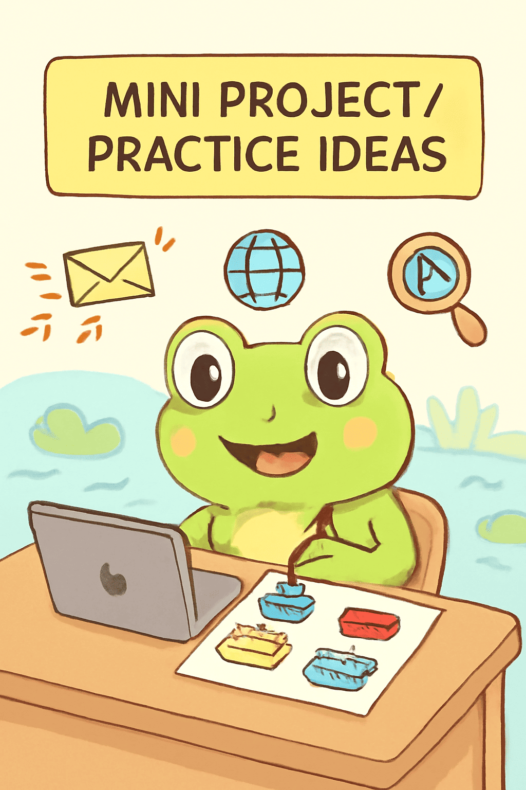

Welcome, Tadpoles!
In this lecture, we’ll explore how the internet works, key networking concepts, and the basics of web development. By the end, you’ll understand how websites and data travel across the web and what it means to become a full-stack developer.
What is the Internet?
The internet is a global network of computers and servers that communicate with each other. It allows devices to share data such as:
- Websites
- Emails
- BVideos
- Files
Key Points:
- It’s not a single entity but a network of networks.
- Devices connect through Internet Service Providers (ISPs).
- Without the internet, websites, online games, and video calls wouldn’t exist!
Fun Example:
Think of the internet as a huge pond, where each device is a lily pad, and data is a frog hopping from pad to pad.
How Data Travels
When you send information over the internet:
- Data is broken into packets.
- Each packet travels through different paths in the network.
- Packets are reassembled at the destination.
Protocols:
- TCP/IP: Rules that ensure packets are delivered correctly.
- HTTP/HTTPS: Rules that let your browser display websites.
Examples:
Sending an email is like sending a message in small envelopes, each taking a slightly different route, then combining them at the recipient’s mailbox.
IP Address
An IP address is a unique number assigned to every device on the internet.
- Think of it like your home address, but for computers.
- IPv4 Example: 192.168.1.1
- IPv6 Example: 2001:0db8::1
Types of IPs:
DNS (Domain Name System)
Humans use domain names (like google.com) because they’re easier to remember than numbers.
- DNS translates domain names into IP addresses.
- Without DNS, you’d need to type 172.217.14.206 instead of google.com.
How it works:
- You type a website name in your browser.
- The request goes to a DNS server.
- DNS server finds the IP and sends it back to your browser.
- Your browser connects to the server using the IP and loads the website.
Fun Frog Tip:
DNS is like a friendly frog guide, helping you hop to the right lily pad!
MAC Address
A MAC address is a unique identifier for a device’s network interface.
- Stands for Media Access Control.
- Used locally in networks to identify devices.
- Example: 00:1A:2B:3C:4D:5E
Why it matters:
Helps networks send data to the correct device within a LAN.
Port Numbers
Port numbers tell a device which service should handle incoming data.
- Examples:
- Port 80 → HTTP websites
- Port 443 → HTTPS websites
IPv4 vs IPv6
- IPv4: 32-bit, limited addresses.
- IPv6: 128-bit, virtually unlimited addresses.
Why IPv6:
- The world ran out of IPv4 addresses.
- IPv6 ensures every device can have a unique IP.
LAN, Switch, Router & VPN
- LAN (Local Area Network): Connects devices in a small area, like a home.
- Switch: Connects multiple devices in a LAN.
- Router: Connects LAN to the Internet.
- VPN (Virtual Private Network): Creates a secure connection over the internet.
Fun Example:
Your home Wi-Fi:
- Devices → Switch → Router → Internet
VPN → Adds a secure “tunnel” for private access.
Web Development Basics
- Web Development: Creating websites and applications for the internet.
- Frontend: What users see (buttons, text, images).
- Backend: Server, database, and logic behind the scenes.
MERN Stack:
- MongoDB: Database
- Express.js: Backend framework
- React.js: Frontend framework
- Node.js: Backend runtime environment
Full-Stack Developer
A full-stack developer can work on both frontend and backend, understanding:
- How data flows from browser to server
- How to create user interfaces
- How to connect databases
🐸FrogglePop Tip
"Think of the Internet as a frog pond. Every frog (device) has its own spot (IP). When one frog croaks (sends data), the sound hops across the pond through ripples (packets & routers) until it reaches another frog."
Mini Project / Practice Ideas
To make sure you really get how the internet works, try these fun activities:
Project 1: Internet Journey Map
Draw (on paper or digitally) the path your request takes when you type www.frogglepop.com into a browser:
- Start at the client (your device)
- Pass through the DNS server
- Find the IP address
- Travel through routers/switches
- Reach the server
- Finally, display the webpage on your device
Project 2: Packet Story
Write a short “story” of a data packet traveling across the internet.
Example: “Hi, I’m Packet #12. I left the server, took a detour at Router A, zipped through Switch B, and finally reached your laptop to show you FrogglePop’s homepage!”
Project 3: IP Hunt
Open the Command Prompt (Windows) or Terminal (Mac/Linux) and use the command:
ping www.google.com
- Note the IP address that shows up.
- Try it with a few other websites.
- Compare the results — notice how each site has a different IP!
Project 4: HTTP vs HTTPS Lock
Open your browser and look at the address bar of 3–4 websites.
- Which ones use HTTP and which use HTTPS?
- Write down why HTTPS is safer.